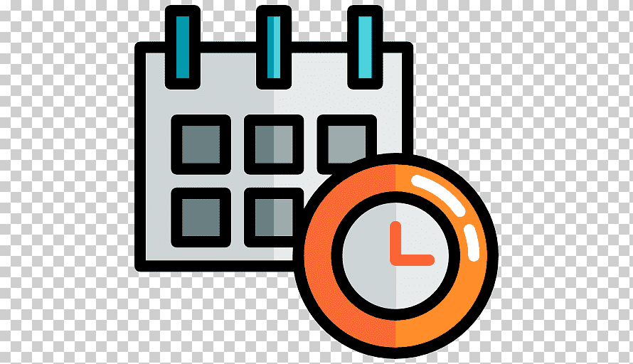

Orientación Laboral en IT
 Salarios en Informática
Salarios en Informática
El sector de la informática es uno de los mejor remunerados en Argentina, y su demanda no deja de crecer. De acuerdo con la Cámara de la Industria Argentina del Software (CESSI), el salario promedio para un programador junior, es decir, alguien con poca experiencia, ronda los $200.000 brutos mensuales. Por otro lado, los profesionales con experiencia (senior) o especializados en áreas como inteligencia artificial, ciberseguridad o ciencia de datos pueden superar los $500.000 mensuales. Además, muchas empresas ofrecen beneficios adicionales como bonos por desempeño, ajustes salariales por inflación y pagos en dólares para retener talento. Los salarios suelen estar vinculados a las competencias del trabajador y al tipo de empresa: multinacionales y empresas tecnológicas grandes suelen pagar más que startups o pymes locales. Si buscas un sector con posibilidades económicas atractivas, la informática es una excelente opción.
 Horarios y Modalidad de Trabajo
Uno de los grandes atractivos de trabajar en informática es la flexibilidad horaria y las modalidades de trabajo remoto que muchas empresas ofrecen. En general, la jornada laboral en Argentina es de 8 horas diarias, aunque en el sector IT es común encontrar jornadas más reducidas, de entre 6 y 7 horas al día, dependiendo del puesto y la empresa.Por otro lado, el trabajo remoto, que se popularizó durante la pandemia, sigue siendo una tendencia sólida en el sector. Muchas compañías ofrecen esquemas híbridos o totalmente remotos, permitiendo a los empleados trabajar desde cualquier lugar. Esto es ideal para quienes buscan equilibrar la vida personal y laboral. Sin embargo, hay que estar preparados para picos de trabajo intensos, especialmente cuando se acercan fechas de entrega importantes. Es clave organizarse y negociar tus horas extras para que sean reconocidas según la ley.
Tipos de Trabajo
El sector IT ofrece una amplia variedad de roles y oportunidades laborales que se adaptan a diferentes habilidades e intereses. Algunos de los trabajos más comunes en informática son: Desarrollador de Software: Diseña y crea aplicaciones web, móviles o de escritorio. Es uno de los roles más demandados. Soporte Técnico: Brinda asistencia para resolver problemas de hardware y software en empresas o usuarios individuales. Analista de Datos: Trabaja con grandes volúmenes de datos, analizándolos para obtener información clave que ayude a tomar decisiones estratégicas. Especialista en Ciberseguridad: Protege sistemas, redes y datos de posibles ataques informáticos. Administrador de Redes: Configura y mantiene la infraestructura tecnológica de las empresas. Cada rol requiere habilidades específicas, pero muchos se pueden aprender a través de cursos online, bootcamps o carreras universitarias. Investigar y probar diferentes áreas es clave para encontrar tu camino.
 Gremios y Asociaciones
Gremios y Asociaciones
En Argentina, los trabajadores de informática tienen acceso a gremios y asociaciones que buscan proteger sus derechos y mejorar sus condiciones laborales. Algunos de los más importantes son:Unión Informática: Un sindicato dedicado exclusivamente a trabajadores del sector IT, que promueve negociaciones salariales colectivas y regula horarios y condiciones laborales.Sindicato de Informáticos de Argentina (SINDAR): Representa a profesionales de empresas privadas, ayudando en casos de conflictos laborales y ofreciendo asesoramiento legal.Pertenecer a un gremio no solo te protege frente a abusos laborales, sino que también te permite participar en negociaciones colectivas y acceder a beneficios como capacitaciones gratuitas, becas y programas de actualización profesional.